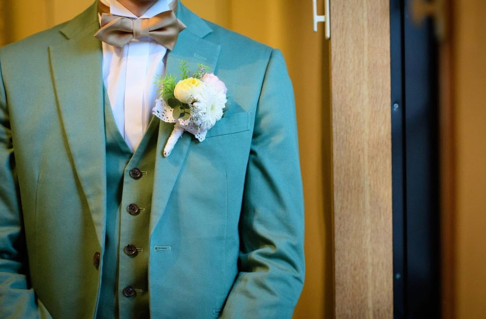

投稿：（ニックネーム/ラガーマンさん）
「ひとつの物語」プロジェクト、第2回。今回は、ご自身の結婚式についての物語です。
私が結婚式をして一番よかったと感じたことは、家族の絆を改めて感じることができたことです。

私は幼少期から父親が少し怖かったことと、高校生の時から実家を離れ学生寮に住んでいたこともあり、父親と話すことがほとんどありませんでした。
嫌いだったわけではありません。ただ、話さない時間が長くなるほど、話しかけるきっかけは失われていく。気がつけば、顔を合わせても当たり障りのないやり取りで終わってしまう。そんな関係が、当たり前になっていました。
そんな父親と話す機会を作ってくれたのが、結婚式についてでした。父親と一緒に食事をしたのは、約10年ぶりぐらいのことです。私も父親と何を話したらいいのかわからず、また父親も、私と同じ気持ちだったかと思います。
その後、結婚式の打ち合わせをしている中で、父親との関係をプランナーさんに話していると、
「中座の相手はお父さんで決まりだね」
そう言ってくださいました。私自身は母親にしようかと思っていました。そのほうが自然だと思っていましたし、正直なところ、そのほうが気楽でもありました。けれどプランナーさんの勧めもあり、父親にすることにいたしました。いま思えば、あの一言がなければ、私はきっと無難なほうを選んでいました。
正直、父親と何を喋っていいのか、どんな反応をするのかも不安なまま、結婚式当日を迎えました。結婚式は滞りなく順調に進み、いよいよ中座の時間となりました。
そこで私が「親父！」と呼ぶと、びっくりした顔の父親が前に来てくれました。すると父親が、前に出てくるといきなり、私にハグをしてくれました。
この時、私自身動揺もありましたが、今までにないぐらい嬉しい気持ちになりました。10年分の距離が、その数秒でなくなったわけではないと思います。それでも確かに、何かがほどけた瞬間でした。
結婚式が終わって母親から聞いた話なのですが、食事会も結婚式も、一番楽しみにしていたのは父親だったそうです。知らなかった、と思いました。あの日、緊張していたのは私だけではなかったのです。
結婚式が終わり実家に帰省した時、父親の部屋を見ると、そこには中座シーンの写真が飾られていました。
結婚式がなければ、父親とはこのまま話すことなく過ごしていたかもしれません。
改めて、家族の絆を感じることができた結婚式は素晴らしいものだと実感した瞬間でした。
結婚式ひとつひとつに、素敵な物語があります。プランナー、ヘアメイク、カメラマン、フローリスト、ドレスコーディネイター、司会、音響、サービス、料理人——それぞれの立場から見た結婚式のエピソードをお寄せください。
aichi.wedding.council@gmail.com